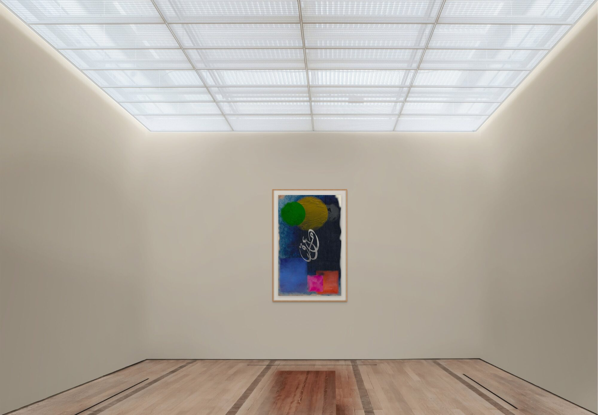
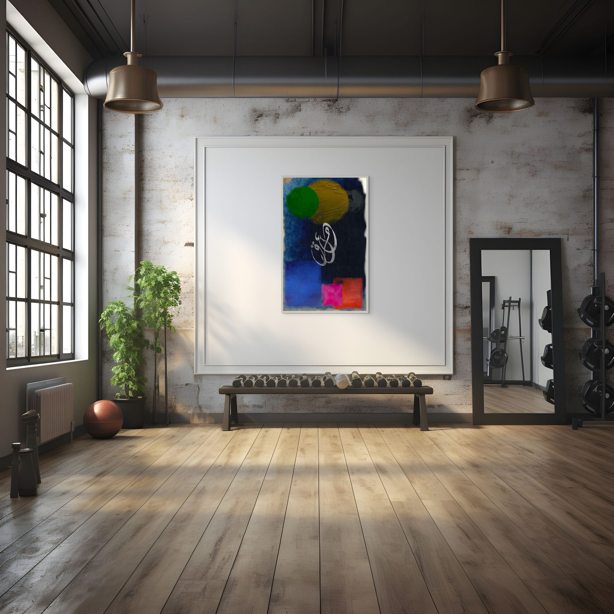
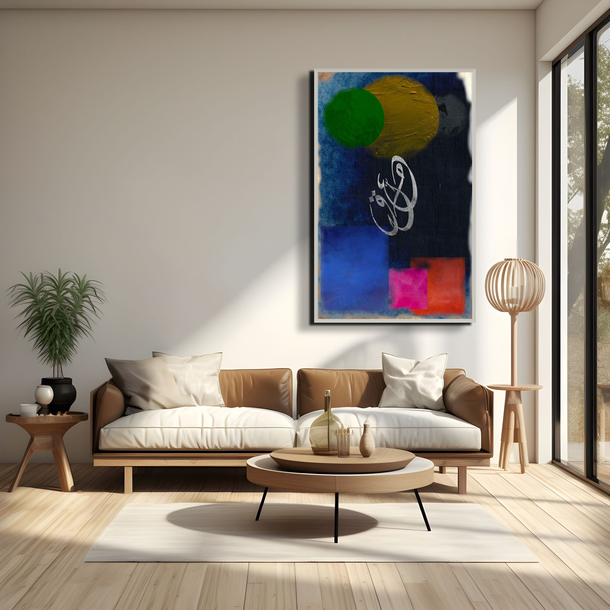

معلّقٌ بين الأرض والسماء
Suspended between the earth and the sky, I search for longing and write of love.
إيمان · Faith

This work explores the state of suspension between worlds — spiritual, emotional, and geographic — and the act of writing as a way of holding oneself together.
The script hangs within the composition as though weightless, neither grounded nor fully released. The surrounding field carries a quality of unresolved light — the kind that exists in threshold moments, between sleep and waking, between departure and arrival.



Ask about إيمان
Editions are small and made after the conversation. Tell me the format you have in mind and the wall it is going to.
Enquire about this work